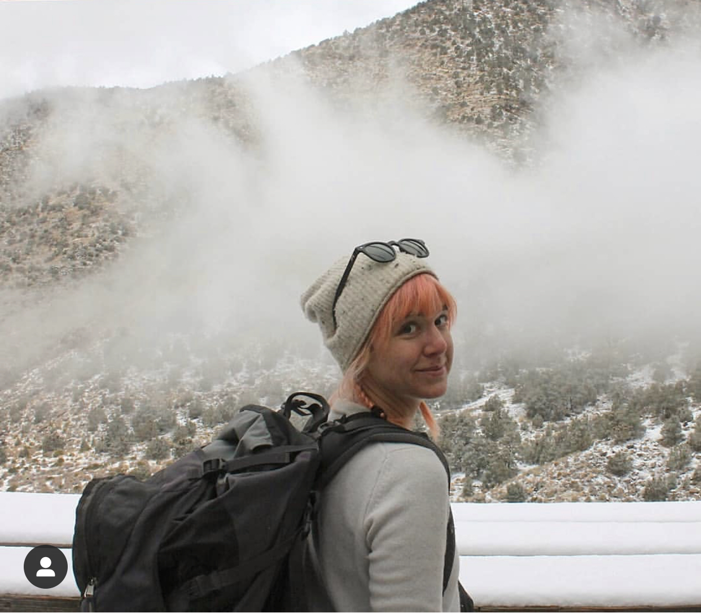

x
We are a team of geographers, historians, digital humanists and community activists seeking to expose structural racism. We have led community members in the work of unearthing thousands of racial covenants that reserved land for the exclusive use of white people. This allowed us to build a map that shows how these racial restrictions were embedded in the physical landscape. We are expanding the geographic focus of our work to incorporate new communities.
This research is showing what communities of color have known for decades. Structural barriers stopped many people who were not white from buying property and building wealth for most of the last century.
In Minneapolis, these restrictions served as powerful obstacles for people of color seeking safe and affordable housing. They also limited access to community resources like parks and schools. Racial covenants dovetailed with redlining and predatory lending practices to depress homeownership rates for African Americans. Contemporary white residents of Minneapolis like to think their city never had formal segregation. But racial covenants did the work of Jim Crow in northern cities like Minneapolis.
This history has been willfully forgotten. So we created Mapping Prejudice to shed new light on these historic practices. We cannot address the inequities of the present without an understanding of the past.
Our work is part of a broader reckoning with the legacies of racist housing policies. Mapping Prejudice was inspired by groundbreaking work in Seattle and Virginia that show how digital tools can illuminate structural racism and transform our understanding of the past.
Segregated Seattle was the brainchild of the Seattle Civil Rights and Labor History Project at the University of Washington, which assembled a database of racial covenants that has become an important resource for historians, legal researchers and activists trying to understand how ideas about race shaped real estate law and housing policy.
Mapping Inequality was conceived by the University of Richmond's Digital Lab, which digitized New Deal redlining maps to illuminate how federal policy makers "used racial criteria to categorize lending and insurance risks." Historians have long understood the importance of redlining. Yet by using digital mapping software to organize, analyze and display historic data about this practice, this project retold the story in way that made it accessible for a popular audience.
Mapping Prejudice builds on this existing work. But our efforts in Minneapolis are made especially urgent by the city's contemporary racial disparities, which are some of the largest in the nation. Our initial research shows that covenants created demographic patterns that remain in place in Minneapolis today. Residential segregation reinforces other disparities in employment, education and health care. Most notable is the gap in homeownership rates. While 78 percent of white families own homes in the Twin Cities, only 25 percent of African-American families have title to their dwelling.
Our initial analysis also draws new attention to the way that race has shaped public space in the city. Our early maps show that some of the city's most spectacular parks were ringed by residential districts that barred people of color from taking up residence. The result was an invisible racial cordon around the city's renowned Grand Rounds, which serves as the city's urban commons.
Once completed, our database and map will be a powerful community resource that should serve as a foundation for productive community conversations and fact-based policy making.
Mapping Prejudice is based in the Borchert Map Library at the University of Minnesota. In 2016, the founding members of the project team joined forces to create the first-ever comprehensive visualization of racial covenants for an American city.
Our Team

Kirsten Delegard
Project Director
Kirsten Delegard is one of the co-founders of the Mapping Prejudice Project. She received her Ph.D. in history from Duke University, where she trained as a women's historian. In her early research, she explored the history of women and politics. More recently she has devoted her energy to public history and unearthing the complex past of her hometown, Minneapolis This focus led to Mapping Prejudice and the Historyapolis Project, which Delegard also started.
Mapping Prejudice is located in the John R. Borchert Map Library at the University of Minnesota. Delegard also holds faculty affiliations with the Department of Geography, Environment and Society and the Heritage Studies and Public History Program at the University of Minnesota. She was awarded a fellowship from the National Endowment of the Humanities and has been a Legacy Research fellow at the Gale Library at the Minnesota Historical Society.
As part of her exploration of the past in Minneapolis, Delegard has written about Prince and the battles over pornography in the city . She also composed many short pieces for the Historyapolis website.
In 2012, the University of Pennsylvania Press published her book, Battling Miss Bolsheviki: The Origins of Female Conservatism in the United States. This book revisits the 1920s to chart the growth of a conservative women’s movement that would reshape the parameters of female political activism for the remainder of the twentieth century. Delegard was also the co-editor, with Nancy A. Hewitt, for the two volume textbook Women, Families and Communities: Readings in American History (Longman Publishing, 2008). She was also part of the team behind Mary Wingerd’s North Country: The Making of Minnesota (University of Minnesota Press, 2010). Delegard was the image curator for that volume, writing a series of interpretive essays that explained the visuals.
In her spare time, Delegard thinks about writing a new history of Minneapolis that she has tentatively titled City of Light and Darkness: The Making of a Progressive Metropolis in Minneapolis

Ryan Mattke
Co-Director and Project Manager
Ryan Mattke is one of the co-founders of Mapping Prejudice. He is the Map & Geospatial Information Librarian and Head of the John R. Borchert Map Library at the University of Minnesota, as well as Adjunct Faculty in the Masters of Geographic Information Science program. Born and raised in Green Bay, WI, Mattke has lived in Minneapolis for nearly 20 years and now considers himself a Minneapolitan and a Minnesotan.
Mattke holds a B.A. in English (Creative Writing) and a Masters of Geographic Information Science, both from the University of Minnesota. His areas of research interest include geospatial data access and discovery, increased access to library collections, and the history of Geographic Information Systems in Minnesota, as indicated by his published scholarship.
When he is not managing projects, poring over maps, or visualizing data he can be found reading, writing, paddling, hiking, climbing, gardening, or building canoes.

Penny Petersen
Property Records Specialist
Penny Petersen is one of the co-founders of the Mapping Prejudice Project and is a leading expert on historic property records in Minnesota.
After retiring as a researcher for a Minneapolis-based historical consultant in 2015, Petersen spent countless hours in the Hennepin County Recorder’s Office identifying thousands of deeds encumbered by racial restrictions. This work only intensified after Mapping Prejudice launched its Zooniverse platform for crowd-sourcing deed transcription. Having transcribed more than fifteen thousand property records online, Petersen now leads training sessions for Mapping Prejudice volunteers.
Petersen embraced this effort after Kirsten Delegard requested instruction on finding racially-restricted property deeds in Minneapolis. Delegard was so befuddled by the byzantine organization of property records that Petersen decided it would be easier to do this work herself. She started with the Homewood neighborhood, where activists had long bemoaned the discriminatory barriers erected by restrictive covenants. When her search proved fruitless, she realized the importance of digging into the archive to uncover where and when racial restrictions were placed on property holdings in Minneapolis.
Petersen has a long-standing interest in the history of the Minneapolis central riverfront. Her first book, Hiding in Plain Sight: Minneapolis’ First Neighborhood, describes the growth of the area around St. Anthony Falls. She also used property records to reconstruct the forgotten world of nineteenth century red-light districts in Minneapolis. She told the story of the powerful women who ran these Mill City establishments in Minneapolis Madams: The Lost History of Prostitution on the Riverfront, which is available from the University of Minnesota Press. A short snippet from this larger work was published on Historyapolis in 2014.
Michael Corey
Geospatial, Technical and Data Lead / Associate Director
Michael Corey is the Geospatial, Technical and Data Lead / Associate Director for the Mapping Prejudice Project. Before transitioning to public history, Michael spent 20 years as a journalist and data journalist at the Star Tribune, Reveal from the Center for Investigative Reporting and the Des Moines Register.
His previous work has spanned zoning and segregation, mortgage disparities, the U.S.-Mexico border fence system, human-induced earthquakes, and sexual abuse in the Catholic Church.
Hannah L. Coble
Intern
Hannah L. Coble is a storyteller and public historian, who is expected to receive her Masters of Heritage Studies and Public History in spring of 2022. She graduated from the College of Wooster in 2018 with degrees in English and Anthropology. Following the completion of her bachelor’s degree, she worked in museums focusing on visitor engagement, early childhood education, and daily programming.
Hannah’s research interests are founded on the idea that place is a powerful repository of stories and identities. She is specifically interested in how the interplay of story, place, and identity has been commodified in relation to public lands..
Emily Cavazos
Intern
Emily Cavazos is a current research assistant for mapping prejudice. She is currently enrolled as a student in the MGIS program at the University of Minnesota. In 2016, she graduated from Macalester College receiving a Bachelor’s degree in Biology and Art History.
Emily is interested in community building, fat liberation and creating accessible map products that inspire action.
In her personal time, Emily enjoys hiking, photographing plants, and making art - currently she is exploring the printmaking medium.

Jamila Boudlali
Intern
Jamila Boudlali is an archival researcher/writer for Mapping Prejudice. She is currently enrolled as a student in the Master of Urban Planning program at the Humphrey School at the University of Minnesota with a focus on Housing and Community Development. She is interested in exploring the historical factors that contributed to current inequalities, as well as working to increase access to affordable housing globally and locally.
In 2012, she graduated from the University of Minnesota receiving a Bachelor’s degree in Geography. Before coming to Mapping Prejudice, she spent several years at the Minnesota Historical Society, Minneapolis Public Schools and the Office of the Minnesota Secretary of State, as well as working in community organizations.
In her spare time she enjoys baking, exploring different parks and traveling.

Jake Ford
Intern
Jake Ford is a research assistant with Mapping Prejudice. He is currently pursuing a Master of Geographic Information Science degree at the University of Minnesota. He has a BFA in acting from the U of M and has a background as an actor and theater maker on the east coast.
He is interested in the narrative power of maps and geospatial data, and in how storytelling can build, shape, and empower communities. He’ll take any excuse to walk in the woods, and recently completed a thru-hike of the Appalachian Trail with his father.
Community Advisory Board
Lisa German
Dean of the University of Minnesota Libraries
Dean German serves on this body in a listening role. This board gives her an opportunity to hear directly from community members how Mapping Prejudice--and by extension the Libraries--can meet the needs of the people and organizations that they represent.
Owen Duckworth
Director of Organizing & Policy, The Alliance
The Alliance is a coalition of organizations focused on housing and growth with racial equity at core. At the Alliance, Duckworth organizes coalitions working to ensure that public investments in our region are made in partnership with the communities they affect and advance racial equity.
Daniel Bergin
Executive Producer, TPT
TPT is the PBS station for the Twin Cities. Bergin has been Minnesota’s leading history filmmaker for several decades. His credits include the Lost Twin Cities series, Out North, Jim Crow of the North, and many more, covering diverse topics all rooted in Minnesota history.
Reggie Jackson
Co-owner and Lead Trainer, Nurturing Diversity Partners, Milwaukee, Wisconsin
Jackson is an educator, journalist, community leader, and public historian based in Milwaukee, Wisconsin. Jackson is working to launch “Mapping Prejudice in Milwaukee” and is head Griot for the Black Holocaust Museum.
Lisa Purcell
Teacher, Roosevelt High School, Minneapolis Public Schools
Purcell supports curriculum development and college-credit programming at Roosevelt High School in the Minneapolis Public Schools. She is working to create a culturally-relevant, place-conscious curriculum that is inclusive of all students’ histories. She has worked with Mapping Prejudice to develop resources for educators and worked with educators to facilitate their usage of these materials and involvement with Mapping Prejudice.
Dr. Kate Beane
Director of Native American Initiatives at the Minnesota Historical Society
Dr. Beane is part of the leadership team at the Minnesota Historical Society, one of the largest public history institutions in the country. Beane (Flandreau Santee Dakota, and Muskogee Creek) is a scholar and public historian who challenges the dominant narrative of history, seeking to honor the languages, lives, and legacies of Indigenous peoples. She worked with her family to champion the cause of restoring the Dakota name Bde Maka Ska (from Lake Calhoun) in her ancestral homeland of Bde Ota (Minneapolis).
Irene Fernando
Commissioner for Hennepin County
Fernando was the first person of color elected to the seven member Hennepin County Board of Commissioners. The Board oversees the functions and $2.4 billion budget for Hennepin County, the largest and most populous county in the state of Minnesota. Fernando uses a racial equity framework for policy making, supporting interventions that address economic and racial disparities.
Shannon Smith Jones
Executive Director, Hope Community
Hope Community is an innovative non-profit organization dedicated to transforming an urban-core neighborhood in Minneapolis. Hope provides quality rental homes as well as programs that cultivate leadership, civic involvement, learning and cultural expression for thousands of participants. Jones leads the Hope Community while also serving as a regional leader in community development, housing justice, and community engagement.
Kieu My Phi
Masters in Public Health Candidate, St. Catherine University
Kieu My Phi has served as a research assistant with Mapping Prejudice. She is a graduate student in the Public Health program at St. Catherine University and seeks to support housing justice through a racial equity lens.
In Memoriam

Kevin Ehrman-Solberg
Digital and Geospatial Director
Mapping Prejudice suffered a significant blow when we lost our friend and colleague, Kevin Ehrman-Solberg on June 12, 2021. Kevin was one of the co-founders of the Mapping Prejudice Project and a graduate student in the Department of Geography, Environment and Society at the University of Minnesota.
Kevin touched so many lives with his creativity and brilliance. He was instrumental in creating a new methodology for visualizing racial restrictions, unleashing a new flood of interest in racial covenants. We were so fortunate to be able to work with him to create a project that has changed our community for the better.
He helped to create Mapping Prejudice while completing his Master of Geographic Information at the University of Minnesota. Kevin built the database necessary for the Mapping Prejudice maps, devising a process to capture volunteer-generated data into points that could be mapped digitally. He also did the initial spatial analysis for the project, showing how covenants changed neighborhood demographics and how they laid the groundwork for later redlining and devastating urban renewal projects.
While a lot of Kevin’s work was behind the scenes, he was also an informative, entertaining, and persuasive speaker, capable of moving people to action. His presentations brought so many people to the Mapping Prejudice project. To see Kevin in action, watch his 2018 TEDxMinneapolis presentation, “The Geography of Inequality.”
Kevin was born and raised in the Twin Cities. He began researching the history of pornography theaters in Minneapolis as an undergraduate student at Augsburg University. It was this work that brought him to the Historyapolis Project, where he met Kirsten Delegard and began creating visualizations and narratives about Minneapolis history. An active participant proponent of the “digital humanities,” he interrogated the intersection of space and historical narrative. His undergraduate work on pornographic bookstores in Minneapolis -- which explored the connections between pornography, gay sexual liberation, feminism, and police power -- was published in the Middle West Review. Listen to this interview to hear him talk about this research.
Kevin’s many intellectual and political commitments were bound together by his passion for social justice. The uprising that followed the murder of George Floyd supercharged Kevin’s commitment to activism, prompting him to redouble his efforts to provide both practical support and intellectual advocacy for the most vulnerable people in our community. He threw himself into the movement to support the un-housed and was working with other scholars and activists to document the abuses of corporate landlords in Minneapolis. He had planned to return to graduate school in the fall of 2021 to work with Professor Kate Derickson to finish his Ph.D. in geography.
Visit Kevin’s website to read more about his research interests.
Alumni

Marguerite Mills
Researcher & Curriculum Development
Marguerite Mills is an artist, geographer, and cartographer. She joined the Mapping Prejudice team in June of 2018. Mills holds an undergraduate degree in Developmental Psychology and a masters in Geographic Information Science with an emphasis in Sociology. She will begin a PhD in geography in the fall of 2021. Mills' research takes a deep mapping approach, focusing on the intersection of focusing on the intersection of property and housing as a critical juncture for interrogating structural opression and material inequality.
Mills is the winner of the 2020 USpatial Best Overall Map Map Award for her work, "Exodus." She has received grants from the Minnesota Independent Scholars Fund and the University of Minnesota's Academic Innovation Grant. In 2019, Marguerite teamed up with Denise Pike to co-curate an interactive exhibit: "Displaced," installed in southwest Minneapolis Public Libraries. Marguerite developed the digital map component exploring stories of race and place in southwest Minneapolis.
Marguerite is responsible for our website and creating spatial data for the covenant map. She is leading the effort to develop a K-12 curriculum for Mapping Prejudice, visiting dozens of classrooms to speak to students about Mapping Prejudice and using maps for social justice.

Denise Pike
Social Media Intern, 2017-2018
Denise Pike is lifetime Twin Cities local and a student in the Master of Heritage Studies and Public History program at the University of Minnesota. Denise developed an interest in data analysis and GIS during her undergraduate education in Urban Studies at the University of Minnesota. She wants to use the digital humanities to address the inequities that exist in the Twin Cities.
Pike is the curator of a groundbreaking exhibit, "Owning Up: Racism and Housing in Minneapolis,” at the Hennepin History Museum as part of the Racism, Rent and Real Estate: Fair Housing Reframed series. “Owning Up” tells the story or racial discrimination and housing through the lived experiences of Minneapolis residents. The exhibit challenges Minneapolis’ reputation as a “model metropolis” and asks audiences to grapple with the institutional forces behind our contemporary racial inequality.